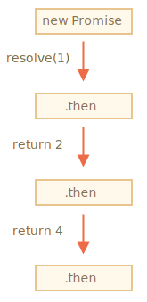

我们回顾一下 info:callbacks 一章中提到的问题：我们有一系列的异步任务要一个接一个地执行 — 例如，加载脚本。我们如何写出更好的代码呢？
Promise 提供了一些方案来做到这一点。
在本章中，我们将一起学习 promise 链。
它看起来就像这样：
new Promise(function(resolve, reject) {
setTimeout(() => resolve(1), 1000); // (*)
}).then(function(result) { // (**)
alert(result); // 1
return result * 2;
}).then(function(result) { // (***)
alert(result); // 2
return result * 2;
}).then(function(result) {
alert(result); // 4
return result * 2;
});它的理念是将 result 通过 .then 处理程序（handler）链进行传递。
运行流程如下：
(*)，.then 处理程序（handler）被调用 (**)。.then 处理程序（handler）(***)随着 result 在处理程序（handler）链中传递，我们可以看到一系列的 alert 调用：1 -> 2 -> 4。

之所以这么运行，是因为对 promise.then 的调用会返回了一个 promise，所以我们可以在其之上调用下一个 .then。
当处理程序（handler）返回一个值时，它将成为该 promise 的 result，所以将使用它调用下一个 .then。
新手常犯的一个经典错误：从技术上讲，我们也可以将多个 .then 添加到一个 promise 上。但这并不是 promise 链（chaining）。
例如：
let promise = new Promise(function(resolve, reject) {
setTimeout(() => resolve(1), 1000);
});
promise.then(function(result) {
alert(result); // 1
return result * 2;
});
promise.then(function(result) {
alert(result); // 1
return result * 2;
});
promise.then(function(result) {
alert(result); // 1
return result * 2;
});我们在这里所做的只是一个 promise 的几个处理程序（handler）。它们不会相互传递 result；相反，它们之间彼此独立运行处理任务。
这里它的一张示意图（你可以将其与上面的链式调用做一下比较）：
在同一个 promise 上的所有 .then 获得的结果都相同 — 该 promise 的结果。所以，在上面的代码中，所有 alert 都显示相同的内容：1。
实际上我们极少遇到一个 promise 需要多处理程序（handler）的情况。使用链式调用的频率更高。
.then(handler) 中所使用的处理程序（handler）可以创建并返回一个 promise。
在这种情况下，其他的处理程序（handler）将等待它 settled 后再获得其结果（result）。
例如：
new Promise(function(resolve, reject) {
setTimeout(() => resolve(1), 1000);
}).then(function(result) {
alert(result); // 1
return new Promise((resolve, reject) => { // (*)
setTimeout(() => resolve(result * 2), 1000);
});
}).then(function(result) { // (**)
alert(result); // 2
return new Promise((resolve, reject) => {
setTimeout(() => resolve(result * 2), 1000);
});
}).then(function(result) {
alert(result); // 4
});这里第一个 .then 显示 1 并在 (*) 行返回 new Promise(…)。1 秒后它会进行 resolve，然后 result（resolve 的参数，在这里它是 result*2）被传递给第二个 .then 的处理程序（handler）。这个处理程序（handler）位于 (**) 行，它显示 2，并执行相同的动作（action）。
所以输出与前面的示例相同：1 -> 2 -> 4，但是现在在每次 alert 调用之间会有 1 秒钟的延迟。
返回 promise 使我们能够构建异步行为链。
让我们将本章所讲的这个特性与在 上一章 中定义的 promise 化的 loadScript 结合使用，按顺序依次加载脚本：
loadScript("/article/promise-chaining/one.js")
.then(function(script) {
return loadScript("/article/promise-chaining/two.js");
})
.then(function(script) {
return loadScript("/article/promise-chaining/three.js");
})
.then(function(script) {
// 使用在脚本中声明的函数
// 以证明脚本确实被加载完成了
one();
two();
three();
});我们可以用箭头函数来重写代码，让其变得简短一些：
loadScript("/article/promise-chaining/one.js")
.then(script => loadScript("/article/promise-chaining/two.js"))
.then(script => loadScript("/article/promise-chaining/three.js"))
.then(script => {
// 脚本加载完成，我们可以在这儿使用脚本中声明的函数
one();
two();
three();
});在这儿，每个 loadScript 调用都返回一个 promise，并且在它 resolve 时下一个 .then 开始运行。然后，它启动下一个脚本的加载。所以，脚本是一个接一个地加载的。
我们可以向链中添加更多的异步行为（action）。请注意，代码仍然是“扁平”的 — 它向下增长，而不是向右。这里没有“厄运金字塔”的迹象。
从技术上讲，我们可以向每个 loadScript 直接添加 .then，就像这样：
loadScript("/article/promise-chaining/one.js").then(script1 => {
loadScript("/article/promise-chaining/two.js").then(script2 => {
loadScript("/article/promise-chaining/three.js").then(script3 => {
// 此函数可以访问变量 script1，script2 和 script3
one();
two();
three();
});
});
});这段代码做了相同的事儿：按顺序加载 3 个脚本。但它是“向右增长”的。所以会有和使用回调函数一样的问题。
刚开始使用 promise 的人可能不知道 promise 链，所以他们就这样写了。通常，链式是首选。
有时候直接写 .then 也是可以的，因为嵌套的函数可以访问外部作用域。在上面的例子中，嵌套在最深层的那个回调（callback）可以访问所有变量 script1，script2 和 script3。但这是一个例外，而不是一条规则。
确切地说，处理程序（handler）返回的不完全是一个 promise，而是返回的被称为 "thenable" 对象 — 一个具有方法 `.then` 的任意对象。它会被当做一个 promise 来对待。
这个想法是，第三方库可以实现自己的“promise 兼容（promise-compatible）”对象。它们可以具有扩展的方法集，但也与原生的 promise 兼容，因为它们实现了 `.then` 方法。
这是一个 thenable 对象的示例：
```js
class Thenable {
constructor(num) {
this.num = num;
}
then(resolve, reject) {
alert(resolve); // function() { native code }
// 1 秒后使用 this.num*2 进行 resolve
setTimeout(() => resolve(this.num * 2), 1000); // (**)
}
}
new Promise(resolve => resolve(1))
.then(result => {
return new Thenable(result); // (*)
})
.then(alert); // 1000ms 后显示 2
```
JavaScript 检查在 `(*)` 行中由 `.then` 处理程序（handler）返回的对象：如果它具有名为 `then` 的可调用方法，那么它将调用该方法并提供原生的函数 `resolve` 和 `reject` 作为参数（类似于 executor），并等待直到其中一个函数被调用。在上面的示例中，`resolve(2)` 在 1 秒后被调用 `(**)`。然后，result 会被进一步沿着链向下传递。
这个特性允许我们将自定义的对象与 promise 链集成在一起，而不必继承自 `Promise`。在前端编程中，promise 通常被用于网络请求。那么，让我们一起来看一个相关的扩展示例吧。
我们将使用 fetch 方法从远程服务器加载用户信息。它有很多可选的参数，我们在 单独的一章 中对其进行了详细介绍，但是基本语法很简单：
let promise = fetch(url);执行这条语句，向 url 发出网络请求并返回一个 promise。当远程服务器返回 header（是在 全部响应加载完成前）时，该 promise 使用一个 response 对象来进行 resolve。
为了读取完整的响应，我们应该调用 response.text() 方法：当全部文字（full text）内容从远程服务器下载完成后，它会返回一个 promise，该 promise 以刚刚下载完成的这个文本作为 result 进行 resolve。
下面这段代码向 user.json 发送请求，并从服务器加载该文本：
fetch('/article/promise-chaining/user.json')
// 当远程服务器响应时，下面的 .then 开始执行
.then(function(response) {
// 当 user.json 加载完成时，response.text() 会返回一个新的 promise
// 该 promise 以加载的 user.json 为 result 进行 resolve
return response.text();
})
.then(function(text) {
// ...这是远程文件的内容
alert(text); // {"name": "iliakan", "isAdmin": true}
});从 fetch 返回的 response 对象还包括 response.json() 方法，该方法读取远程数据并将其解析为 JSON。在我们的例子中，这更加方便，所以让我们切换到这个方法。
为了简洁，我们还将使用箭头函数：
// 同上，但是使用 response.json() 将远程内容解析为 JSON
fetch('/article/promise-chaining/user.json')
.then(response => response.json())
.then(user => alert(user.name)); // iliakan, got user name现在，让我们用加载好的用户信息搞点事情。
例如，我们可以多发一个到 GitHub 的请求，加载用户个人资料并显示头像：
// 发送一个对 user.json 的请求
fetch('/article/promise-chaining/user.json')
// 将其加载为 JSON
.then(response => response.json())
// 发送一个到 GitHub 的请求
.then(user => fetch(`https://api.github.com/users/${user.name}`))
// 将响应加载为 JSON
.then(response => response.json())
// 显示头像图片（githubUser.avatar_url）3 秒（也可以加上动画效果）
.then(githubUser => {
let img = document.createElement('img');
img.src = githubUser.avatar_url;
img.className = "promise-avatar-example";
document.body.append(img);
setTimeout(() => img.remove(), 3000); // (*)
});这段代码可以工作，具体细节请看注释。但是，这儿有一个潜在的问题，一个新手使用 promise 的典型问题。
请看 (*) 行：我们如何能在头像显示结束并被移除 之后 做点什么？例如，我们想显示一个用于编辑该用户或者其他内容的表单。就目前而言，是做不到的。
为了使链可扩展，我们需要返回一个在头像显示结束时进行 resolve 的 promise。
就像这样：
fetch('/article/promise-chaining/user.json')
.then(response => response.json())
.then(user => fetch(`https://api.github.com/users/${user.name}`))
.then(response => response.json())
.then(githubUser => new Promise(function(resolve, reject) { // (*)
let img = document.createElement('img');
img.src = githubUser.avatar_url;
img.className = "promise-avatar-example";
document.body.append(img);
setTimeout(() => {
img.remove();
resolve(githubUser); // (**)
}, 3000);
}))
// 3 秒后触发
.then(githubUser => alert(`Finished showing ${githubUser.name}`));也就是说，第 (*) 行的 .then 处理程序（handler）现在返回一个 new Promise，只有在 setTimeout 中的 resolve(githubUser) (**) 被调用后才会变为 settled。链中的下一个 .then 将一直等待这一时刻的到来。
作为一个好的做法，异步行为应该始终返回一个 promise。这样就可以使得之后我们计划后续的行为成为可能。即使我们现在不打算对链进行扩展，但我们之后可能会需要。
最后，我们可以将代码拆分为可重用的函数：
function loadJson(url) {
return fetch(url)
.then(response => response.json());
}
function loadGithubUser(name) {
return fetch(`https://api.github.com/users/${name}`)
.then(response => response.json());
}
function showAvatar(githubUser) {
return new Promise(function(resolve, reject) {
let img = document.createElement('img');
img.src = githubUser.avatar_url;
img.className = "promise-avatar-example";
document.body.append(img);
setTimeout(() => {
img.remove();
resolve(githubUser);
}, 3000);
});
}
// 使用它们：
loadJson('/article/promise-chaining/user.json')
.then(user => loadGithubUser(user.name))
.then(showAvatar)
.then(githubUser => alert(`Finished showing ${githubUser.name}`));
// ...如果 .then（或 catch/finally 都可以）处理程序（handler）返回一个 promise，那么链的其余部分将会等待，直到它状态变为 settled。当它被 settled 后，其 result（或 error）将被进一步传递下去。
这是一个完整的流程图：